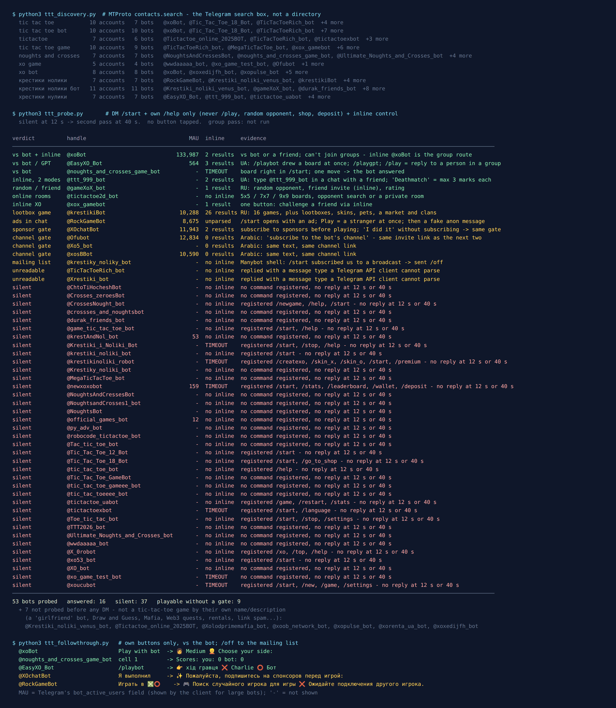

Tic-Tac-Toe Bots on Telegram: 53 Tested, 9 Let You Play
Tic-tac-toe is the one game everybody already knows how to play, which also makes it the one game nobody needs a bot to explain. It is even finished as a puzzle: Wikipedia calls it “a solved game, with a forced draw assuming best play from both players”. So a tic-tac-toe bot has exactly two jobs. Give you a board you can tap, and give you somebody to play against. The extras are where this census went wrong.
On 3 October 2026 I typed “tic tac toe” into Telegram’s search, along with nine other phrasings in English, Russian and Ukrainian, and the next night I messaged every bot that came back looking like the game. 60 bot accounts came back. 7 were plainly something else and I never messaged them. Of the 53 I did message, 37 said nothing at twelve seconds and again at forty. 16 answered, and 9 of those 16 let me play without first doing something for them.
The other seven are the interesting part. Four would not play until I subscribed to a channel or a sponsor. One subscribed me to a mailing list. And one opened with an advert, put me straight into a game with a real stranger, and two minutes after the game sent me an insult dressed up as an “anonymous message”, with a “Block” button that leads to a different bot.

How the list was built
The list came from the platform, not from a directory. Telegram’s search box is an API method called contacts.search, and it only returns accounts that exist right now. I fixed ten queries before measuring anything: tic tac toe, tic tac toe bot, tictactoe, tic tac toe game, noughts and crosses, xo game, xo bot, the Russian крестики нолики and крестики нолики бот, and the Ukrainian хрестики нулики.
Seven accounts were out before I sent a single message, each on its own name or description. One has a tic-tac-toe username and the display name “Твоя Девушка” (“Your Girlfriend”). Others were Draw and Guess, a Mafia club sign-up, Web3 quests, rental listings and a bot asking for your phone number. The last is a stack of shopping-channel links with 15,073 monthly users, more than every tic-tac-toe bot in the census except one.
Each of the 53 got the same treatment: /start in a private chat, the bot’s own help command if it registered one, and an inline query as a liveness check. Nothing that looked like a shop, a wallet, a deposit or a tournament got pressed. Anything silent at twelve seconds got a second pass at forty. Afterwards I pressed each working bot’s own “play against the bot” button, and sent /off to the bot that had subscribed me to something.
The monthly-user numbers come from a field on the bot’s account, bot_active_users, which Telegram’s API documents as “Monthly Active Users (MAU) of this bot (may be absent for small bots)”. Ten of the 53 show one.
37 of 53 said nothing, twice
Most of the list is quiet. Twenty-two of the silent bots never even registered a command menu; the other fifteen registered /start, /help, /newgame or /xo and then didn’t answer any of them. The names are almost the same name over and over: @Tic_Tac_Toe_12_Bot, @Tic_Tac_Toe_18_Bot, @Tic_Tac_Toe_GameBot, @tic_tac_toeeee_bot, @Toe_tic_tac_bot, @Tac_tic_toe_bot. Tic-tac-toe is a classic first bot project. The tutorial ends, and the username stays in search for free.
Two of the silent ones are worth naming for a different reason. @newxoxobot’s description promises you can “wager Telegram Stars against real opponents”, and it registered /wallet and /deposit. @official_games_bot, which is not official anything, says you can “place bets using Telegram Stars”. Both were silent. I sent only /start and deposited nothing. A silent bot with a deposit command is the one place where silence is the good outcome.
Want a game that is definitely switched on?
The free Party Game runs inside Telegram itself, with nothing to add to your group and nothing reading the chat: Truth or Dare, Never Have I Ever and Would You Rather for when tic-tac-toe has run its course and more than two people want in.
Open the Party Game No Telegram? It runs in a browser too: charliemorrison.dev/party-gameThe big one: @xoBot
@xoBot is the reason most people find a tic-tac-toe bot at all. Its account shows 133,987 monthly users, roughly ten times the next bot down. It answers /start with five buttons (play with the bot, play with a friend, difficulty, language, stats) and a short manual. “Play with bot” asked me to pick a side, at Medium difficulty. In a game with a friend, the manual says, “after 5 minutes the game will become expired and the message will be replaced by ⌛”, so a forgotten game cleans itself up.
One detail matters if you want to play in a group: you can’t add @xoBot to one. Its account carries bot_nochats, the flag Telegram uses for bots that can’t be added to groups. That sounds like a limit, and it is the opposite. The bot works inline, the mode where you call it “by typing its username and a query in the text input field in any chat”. Type @xoBot and a space in any chat and the popup offers two cards, one with you as ❌ and one with you as ⭕. Send one and the game is a message in your chat. The bot receives what you typed after its name and the taps on its own board, not the rest of the conversation.
It was also one of the four bots that worked between two people with nothing added when I tested Telegram games for two players in September. A month later it still does.
Two that speak Ukrainian, and the no-draw rule
@ttt_999_bot doesn’t do anything in a private chat except tell you how to use it: open a chat with a friend, type @ttt_999_bot, pick a mode, your friend presses “Приєднатися” (“Join”). The inline popup had two modes, and the second one is the idea I liked best in the whole census. “Дедматч” (Deathmatch): “no draw. Each player has at most 3 marks: from the 4th move, the player’s oldest mark is removed.” A game that is a forced draw between two people who know it becomes a game you can actually lose, because the board keeps changing under you. The welcome also says only the two players can move, so a third person in the chat can’t tap your square for you.
@EasyXO_Bot (564 monthly users) opens with a profile card: games played, wins, draws, rating, board size 3×3. /playbot drew a board straight away, with my name next to ❌. It also has /playgpt, “a game with GPT-4 (adaptive difficulty)” in its own words, and inline it offers “play as ❌”, “play as ⭕” and “play with GPT”. Its profile also ends with “level up your shawarma” and its help with “motivation and support for your workouts!”, two lines that have nothing to do with tic-tac-toe.
The rest that just let you play
@noughts_and_crosses_game_botis the simplest thing in the census:/startsends a score line and an empty board. I tapped the top-left square, it put my ❌ there and answered with a ⭕. No menu, no account, no inline mode.@gameXoX_bot(Russian) has a menu with a random opponent, play with a friend, top players and your rating, and works inline in any chat with “press here to play with a friend”.@tictactoe2d_botgoes the other way from Deathmatch: bigger boards. Its description offers 5×5, 7×7 or 9×9, quick matches with strangers or a private room for a friend. On a bigger board the forced draw goes away too.@xox_gamebotis one button that challenges a friend through inline mode.@krestikiBot(Russian, 10,288 monthly users) is tic-tac-toe as a whole economy: its display name says “16 games”, and its command list runs to tournaments, clans, lootboxes, skins, pets, a trading market,/donateand a store. Its inline mode returned 26 results, including “explosive tic-tac-toe” on 3×3 and 5×5. Playable, nothing blocked me, but built around spending.
Four that make you subscribe first
@XOchatBot (11,943 monthly users) describes itself in English as a place to “challenge your friends”. In a private chat it answered in Russian: “please subscribe to the sponsors before playing”, with one subscribe link and three “Launch” buttons that open other bots, one of them a VPN bot. Underneath was “✅ Я выполнил” (“I did it”). I pressed it without subscribing to anything, and it sent the same gate again. So the button checks. You don’t get a game for nothing here, you pay with four subscriptions.
Three Arabic bots, @Ofubot (12,834 monthly users), @xosBBot (10,590) and @Xo5_bot, each answered with the same text: “Sorry, dear. You must subscribe to the bot’s channel to be able to use it,” followed by the same private channel invite link, character for character. Three bot names, one channel collecting the subscribers. Between the two big ones that’s over 23,000 monthly users being walked to the same place.
I didn’t join the channel to see what it posts. Tic-tac-toe has nothing to unlock, so a tic-tac-toe bot that wants something before the first move is selling something else.
The one that opened with an advert: @RockGameBot
@RockGameBot (8,675 monthly users) plays rock-paper-scissors, tic-tac-toe and battleship, and wants to be added to your group chat (“I can do a lot there”). By default, Telegram’s docs say, a bot in a group “only see[s] relevant messages and commands”. This one has privacy mode off, so in a group it would get every message.
Here is what happened, in order, all on the night of 4 October:
- Before the welcome,
/startbrought a message asking, in Russian, who I’d like a video message with, and four buttons with different names on them. All four buttons open the same link to another bot. - The welcome had a button “Play ❎⭕”. I expected a menu. It was random matchmaking: “searching for a random player”, and about thirty seconds later I was in a game with a real stranger. Having been matched with a person, I played the game out rather than walk away from them, and lost to a straight column. Eight rating points down.
- Less than two minutes after the game ended, the bot sent: “📨 You’ve been sent a new anonymous message”, followed by a paragraph of insults (“upstart, blockhead, windbag” is the polite part). Under it were three buttons: “Reply”, “Find out who”, and “Block”.
All three buttons, including “Block”, open the same link to a different bot, with a tracking code on the end. I didn’t press any of them. RockGameBot’s own menu has no anonymous messages, and I had never given anyone a link to message me anonymously. This is an advert for another bot, written to look like someone said something nasty about you. Pressing “Block” would block nobody; it would start the other bot.
Telegram’s real block is in the chat’s own menu, never a button inside a message. How genuine anonymous-message bots work, and what they see about you, is in anonymous message apps for Telegram. If a kid in your family plays here, this is what arrives in their chat after a game.
The mailing list and the two I couldn’t read
@krestiky_noliky_bot answered /start with “Congratulations! You subscribed to Крестики-нолики. Use /off to pause the subscription,” and an advert for Manybot, the constructor it was built with. It is not a game, it’s a broadcast list with a game’s name. /off worked.
@TicTacToeRich_bot and @Xrestiki_bot both answered, but with a message type my Telegram API client couldn’t parse, so I can’t tell you what they sent.
Tic-tac-toe in a Telegram chat without any bot
You don’t need any of this to play, it’s just slightly clumsier. A bot’s board is one message that changes. Without a bot, nobody can edit someone else’s message, so every move is a new one:
- One of you sends a numbered grid as three lines:
1 2 3,4 5 6,7 8 9. - To move, reply with the grid copied and your square replaced:
❌ 2 3,4 5 6,7 8 9. - The other player copies that message and replaces one of the numbers with ⭕. The numbers save you saying “top left”, and replies keep the game in order while the chat moves on.
To pick who starts, send a 🎲 each. Telegram’s server picks the number before the animation starts, and I tested how fair it is by throwing 900 of them. And if two of you know the game well enough to draw every time, play Deathmatch by hand: when you place a fourth mark, take your oldest one off the board.
The inline bots above still do it better, in one message with a score. And unlike most game bots, they never need to join your group.
When more than two people want to play
Tic-tac-toe is a game for two. The Telegram Party Pack is for the rest of the chat: 110 Truth or Dare, 45 Never Have I Ever, 30 Would You Rather, 30 Most Likely To, 25 Paranoia and 15 Story Chain prompts, as copy-paste text and ready-made poll blocks, with a host guide. 255 in total, nothing that needs a bot.
Get the pack — $9.99 Or see how to run a game night in Telegram without any pack.What I could not test
No group pass. Everything here comes from private chats, inline queries, each bot’s own text and buttons, and the flags on its account. The account I test from can’t create groups, and I don’t borrow strangers’ groups to test bots in. So “works in a chat” means “its inline mode returned a game card”, not “I played a whole game in a group”.
One game is not a review. I played one game to the end, and only because a stranger was on the other side. The bigger boards and the GPT mode are described from the bots’ own words.
Silent is not dead for good. In other censuses on this site, bots came back from silence within three weeks and others went quiet. The date at the top of this page matters more than the list.
If you want to play tonight
- Two of you, any chat: type
@xoBotand a space and pick a side. Nothing gets added anywhere. - You want a game that isn’t always a draw:
@ttt_999_botinline, Deathmatch mode, or the hand-played version above. - Avoid: any bot that wants a subscription, a deposit or a seat in your group before the first move. And never press “Block” inside a message.
- More than two people: the free Party Game, or the party games list for what holds up in a bigger group. For other two-player games, Telegram games for two has the rest.